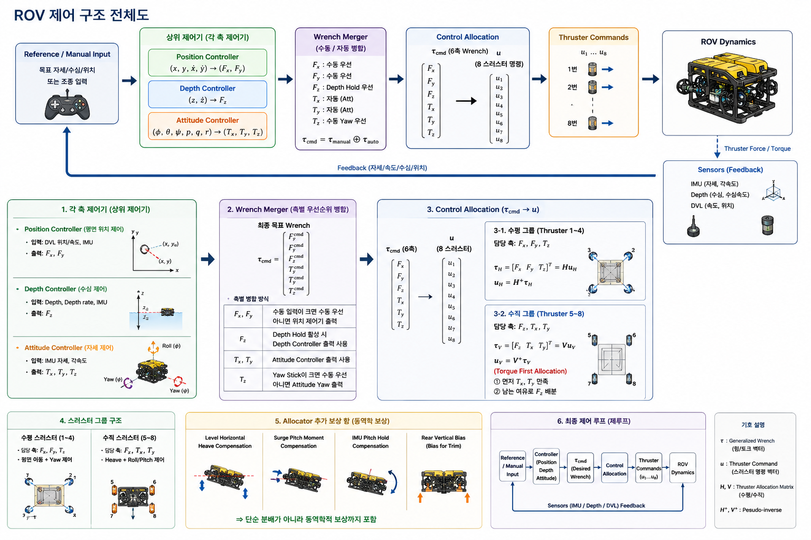

입력 계층
조종기 입력, IMU, DVL, depth sensor 같은 센서/조작 입력이 각 제어 모듈로 들어갑니다.
System Overview
이 페이지는 `code_review/code/*.py`에 들어 있는 실제 제어 코드를 기준으로, 전체 제어 흐름과 각 모듈의 역할을 이해하기 쉽게 정리한 소개 페이지입니다. 자세한 함수 단위 코드 리뷰는 별도의 상세 리뷰 페이지에서 볼 수 있게 연결해두었습니다.
조종기 입력, IMU, DVL, depth sensor 같은 센서/조작 입력이 각 제어 모듈로 들어갑니다.
`depth`, `position`, `attitude` 제어기가 각각 자기 축의 목표를 계산합니다.
`wrench_merger`가 제어 출력을 합치고 `allocator_node`가 8개 thruster 명령으로 바꿉니다.
1. Control Structure
조종자가 주는 수동 입력을 생성합니다.
`/rov/wrench_manual`, `/cmd_attitude`, `/rov/armed`수심 목표와 수동 heave를 해석해 `Fz`를 만듭니다.
`/ctrl/depth_heave`, `/ctrl/depth_active`DVL와 IMU로 XY 위치 유지용 힘을 계산합니다.
`/ctrl/position_force`, `/rov/position_estimate`roll / pitch / yaw 토크를 계산합니다.
`/ctrl/attitude_torque`수동 입력과 자동 제어 출력을 축별 규칙으로 합칩니다.
`/rov/wrench_cmd`최종 wrench를 8개 스러스터 명령으로 변환합니다.
`/thruster_cmd`현재 시스템은 하나의 펌웨어 안에 모든 제어가 들어있는 형태가 아니라, ROS 2 노드들이 각자 역할을 나눠서 협력하는 분산형 제어 구조입니다.
그래서 특정 축만 개별적으로 튜닝하거나, 모듈 단위로 디버깅하고 교체하기가 쉽습니다.
2. Reference Image

이 이미지는 현재 제어 구조를 빠르게 훑을 때 유용한 참고 자료입니다. HTML 페이지에서는 텍스트 설명과 함께 이 이미지를 같이 보면서 제어 흐름과 모듈 관계를 이해할 수 있게 구성했습니다.
자세한 함수 동작이나 코드 의미는 오른쪽 링크가 아니라 아래 모듈 설명과 별도 코드 리뷰 페이지에서 더 자세히 확인할 수 있습니다.
3. Modules
IMU를 바탕으로 roll, pitch, yaw를 안정화하는 자세 제어 모듈입니다.
현재 수심과 목표 수심의 차이를 바탕으로 heave 방향 출력을 만드는 모듈입니다.
DVL와 IMU를 사용해 XY 위치를 유지하기 위한 힘을 계산하는 모듈입니다.
수동 입력과 각 자동 제어기 출력을 하나의 최종 wrench로 합치는 supervisory 모듈입니다.
최종 wrench를 실제 8개 thruster 명령으로 바꾸는 output allocation 모듈입니다.